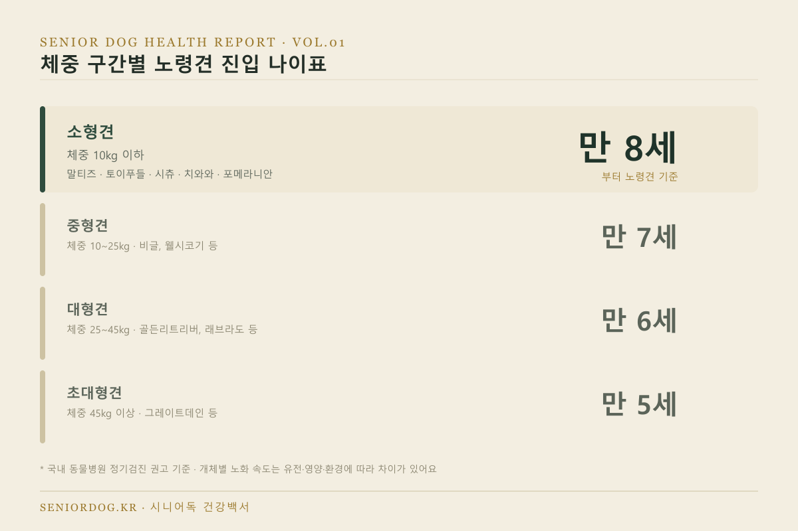
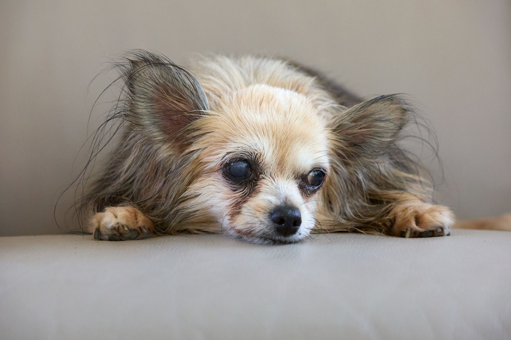
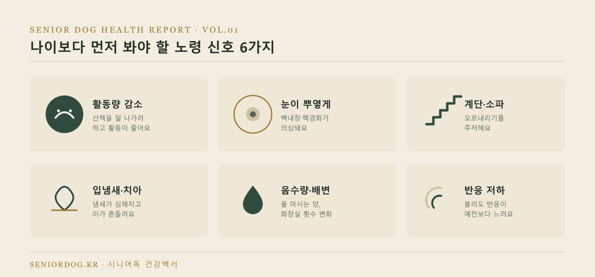
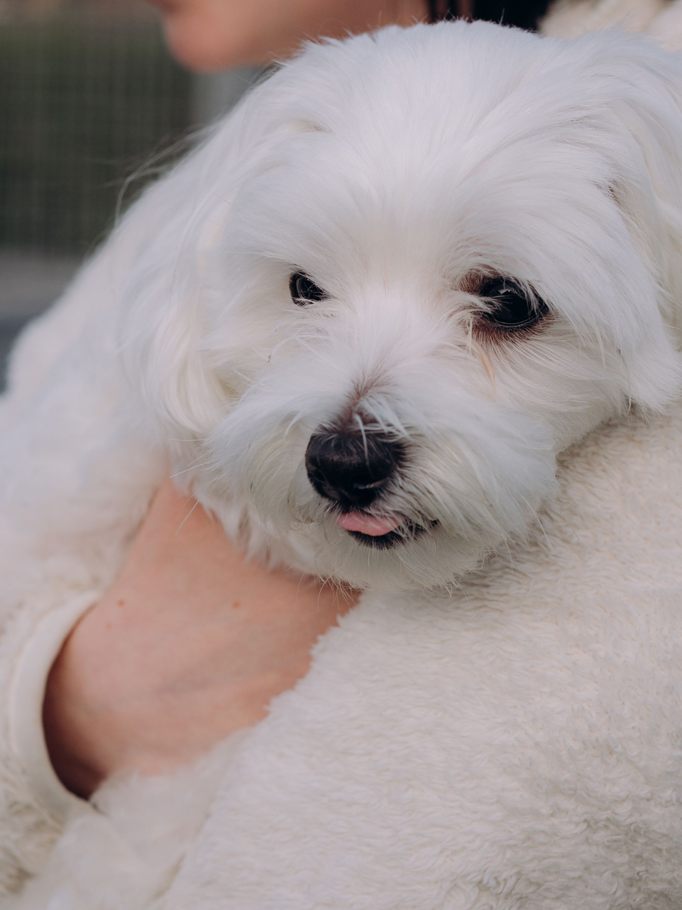
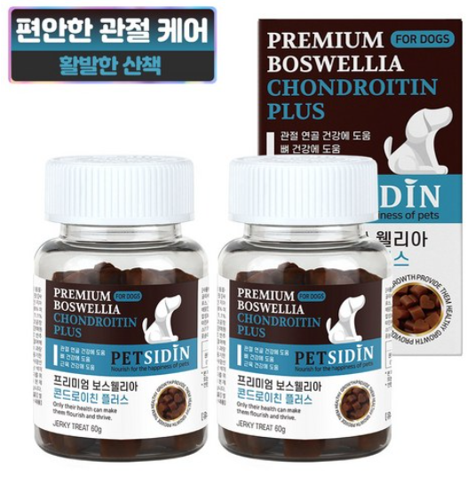

소형견 노령견 기준 나이표, 몇 살부터일까
강아지 나이표·체중별 비교
말티즈, 토이푸들, 시츄, 치와와처럼 몸무게 10kg이 안 되는 소형견을 키우고 계시다면 — 우리 아이는 언제부터 ‘노령견’으로 봐야 할까요? 검진 주기나 사료 전환 시기를 다루기 전에, 먼저 정확한 기준부터 짚고 넘어가려고 해요. 자료마다 나오는 숫자가 조금씩 달라서 헷갈리셨을 텐데, 그 이유까지 함께 정리해드릴게요.

· 국내 다수 동물병원 기준으로 소형견(10kg 이하)은 만 8세부터 노령견으로 분류해요.
· 이 나이는 “정기검진을 더 챙겨야 하는 시점”에 가깝고, 실제 노화 속도는 개체마다 유전·영양·환경에 따라 차이가 커요.
· 해외 자료에서는 소형견의 실제 노령 진입 시기를 더 늦게(개체에 따라 10세 전후) 보기도 하는데, 이 차이가 왜 생기는지는 본문에서 설명할게요.
- 왜 “노령견 기준 나이”가 자료마다 다르게 나올까요?
- 체중 구간별 노령견 진입 나이표
- 대표 소형견종, 실제 몸무게로 비교하면?
- 나이보다 먼저 봐야 할 노령 신호 체크리스트
- 노령견 진입 후 준비하면 좋은 용품
- FAQ
왜 “노령견 기준 나이”가 자료마다 다르게 나올까요?
검색해보면 “소형견 8세”라는 자료도 있고, “소형견은 10~11세는 돼야 노령”이라는 자료도 나와서 혼란스러우실 수 있어요. 이건 두 기준이 서로 다른 걸 재고 있기 때문이에요.
- 국내 동물병원 기준(8세)은 “이 나이부터는 혈액검사·심장초음파 같은 정기검진을 놓치지 말자”는 예방 차원의 스크리닝 신호에 가까워요.
- 해외 자료에서 언급되는 더 늦은 시점은 소형견이 대형견보다 전체 수명 자체가 길다는 점을 반영한, 조금 더 개체별 노화 속도에 가까운 관점이에요.
즉 틀린 정보가 섞여 있는 게 아니라, “언제부터 조심해야 하는가”와 “실제로 언제부터 노화가 뚜렷한가”를 각각 다르게 보고 있는 거예요.
체중 구간별 노령견 진입 나이표
국내 동물병원에서 정기검진 시작 시점으로 흔히 안내하는 기준은 아래와 같아요. 체중이 작을수록 상대적으로 노령 진입이 늦어지는 경향이 있어요.
| 체중 구간 | 분류 | 노령견 진입 나이 | 대표 견종 |
|---|---|---|---|
| 10kg 이하 | 소형견 | 만 8세 | 말티즈, 토이푸들, 시츄, 치와와, 요크셔테리어, 포메라니안 |
| 10~25kg | 중형견 | 만 7세 | 비글, 코커스패니얼, 웰시코기 |
| 25~45kg | 대형견 | 만 6세 | 골든리트리버, 래브라도리트리버 |
| 45kg 이상 | 초대형견 | 만 5세 | 그레이트데인, 세인트버나드 |
* 병원별로 6개월~1년 정도 차이가 있을 수 있어요. 정확한 시점은 다니시는 동물병원에서 한 번 확인해보시는 걸 추천드려요.
대표 소형견종, 실제 몸무게로 비교하면?
“소형견”이라는 분류 안에서도 견종별 몸무게 차이가 꽤 있어요. 흔히 키우시는 소형견종의 평균 체중을 정리해봤어요.
| 견종 | 평균 체중 | 비고 |
|---|---|---|
| 치와와 | 1.5~3kg | 가장 가벼운 편 |
| 요크셔테리어 | 2~3kg | |
| 포메라니안 | 1.9~3.5kg | |
| 말티즈 | 2~4kg | |
| 토이/미니어처 푸들 | 2~7kg | 미니어처는 상위 체중대가 7kg 근접 |
| 비숑프리제 | 3~6kg | |
| 시츄 | 4~7kg |
대부분의 인기 소형견종은 “10kg 이하” 구간에 여유 있게 들어가요. 다만 미니어처 푸들처럼 체구가 큰 편에 속하는 경우, 성견 체중이 8~9kg까지 나가기도 해서 개체에 따라 중형견 기준에 가까워질 수 있어요.

나이보다 먼저 봐야 할 노령 신호 체크리스트
나이 기준은 어디까지나 참고용이에요. 아래 신호 중 2~3개 이상 해당된다면, 아직 8세가 안 됐어도 노령견 관리를 시작하시는 걸 추천드려요.

- 예전보다 산책을 덜 나가려 하거나 활동량이 눈에 띄게 줄었다
- 눈이 뿌옇게 보인다 (백내장·핵경화 의심)
- 계단이나 소파를 오르내리는 걸 주저한다
- 입 냄새가 심해지고 이가 흔들리거나 빠졌다
- 물 마시는 양이나 화장실 가는 횟수가 눈에 띄게 달라졌다
- 이름을 불러도 반응이 예전보다 느리다 (청력 저하 의심)

노령견 진입 후 준비하면 좋은 용품
위 체크리스트에서 “계단이나 소파를 오르내리는 걸 주저한다”에 해당됐다면, 관절 부담을 줄여주는 용품부터 챙겨보시는 걸 추천드려요.

소형견 미끄럼방지 계단
소파·침대 오르내릴 때 무릎·허리 부담을 줄여주는 반려견 전용 계단이에요. 체중 10kg 이하 소형견 기준으로 높이가 맞는 제품을 고르시는 게 중요해요.
도그아이 강아지 논슬립 미끄럼방지 4단 커브 스텝 ↗
소형견 관절 영양제
글루코사민·콘드로이친 성분 위주로, 노령 진입 시기부터 미리 관절 관리를 시작하고 싶으신 분들이 많이 찾는 제품이에요.
펫시딘 보스웰리아 콘드로이친 강아지 관절 영양제 ↗자주 묻는 질문
Q. 우리 집 소형견이 6살인데 벌써 노령견 검진을 받아야 하나요?
A. 8세가 안 됐어도 위 체크리스트에 해당하는 신호가 있다면 미리 상담받아보시는 걸 추천드려요. 반대로 8세를 넘겼다고 갑자기 어딘가 아픈 건 아니니 너무 걱정하지 않으셔도 돼요.
Q. 믹스견(잡종)은 기준을 어떻게 적용하나요?
A. 품종보다 체중 구간으로 판단하시면 돼요. 노화 속도는 순종 여부보다 몸 크기와 더 밀접한 관련이 있어요.
Q. 국내 기준이랑 해외 기준, 뭘 믿어야 하나요?
A. 국내 동물병원 기준(만 8세)은 “이때부터 정기검진을 놓치지 말자”는 신호로 삼으시고, 실제 건강 상태는 이 글의 체크리스트로 함께 살펴보시는 걸 추천드려요.
다음 글
다음 글에서는 노령견 정기검진 주기와 꼭 받아야 할 검사 항목을 다룹니다.